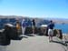

DAVID G. SIMPSON
Personal Web Site
| Home |
| Blog |
| Personal |
| Professional |
| Software |
| Photos |
| Reference |
| Nanopedia |
| Wiki |
| Contact Me |
| NASA Site |
| PGCC Site |
| SCHS Site |
| Esperanto |
| Moon Rocks |
| S-M Comics |
| Mouse Site |
| Art Gallery |
| Ariz. Home |
| Page 1 |
WASHINGTON PHOTO ALBUM: PAGE 1
Scenic view of the Columbia River. |
 Family members enjoying the view of the Columbia River. |
|
Mount Rainier. |
My niece Molly and nephew Zack at the Columbia River. |
|
Ginkgo Petrified Forest State Park in Vantage, Washington, along the Columbia River. There were many petrified trees found in this area, including rare petrified Ginkgo trees. |
Another section of a petrified tree. |
|
Also visible at the Ginkgo Petrified Forest were these prehistoric drawings etched by early native people. |
Horse statues on a mountain top near the Columbia River. |
|
My brother Phil and I climbed to the top of the mountain to get a better look at the horses. |
Phil poses with one of the horses. |
|
The horses were made of metal. Some had graffiti on them. |
Leavenworth, Washington. This is a small town in Washington that was transformed to look like a Bavarian village to attract tourism and help the local economy. |
|
My brother Phil, his wife Sara, and their kids Zack and Molly in Leavenworth. |
{kind=link}
{kind=link}
{kind=link}
{kind=link}
{kind=link}
{kind=link}
{kind=link}
{kind=link}
{kind=link}
{kind=link}
{kind=link}
{kind=link}
{kind=link}
| Page 1 of 1 |
|---|
Contact Information
I may be contacted at: